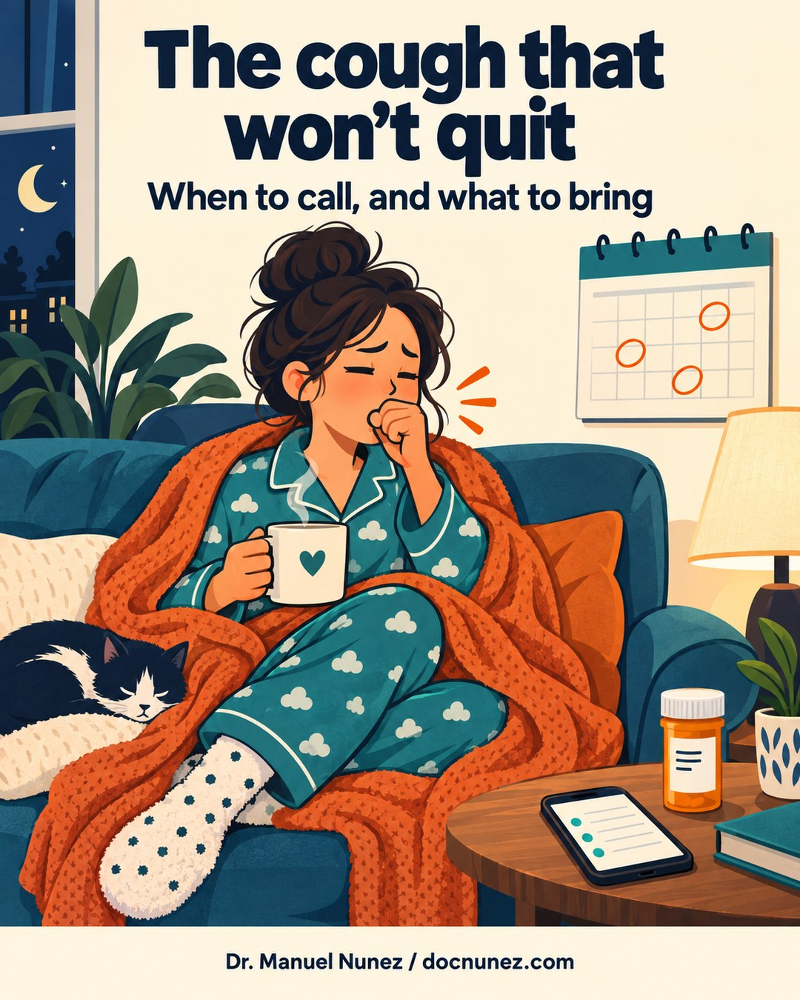
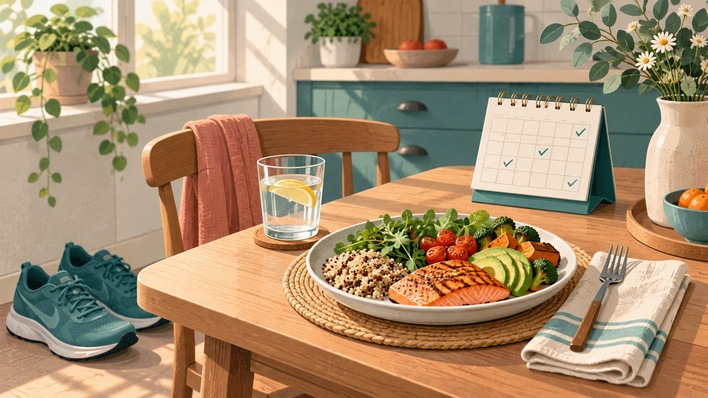
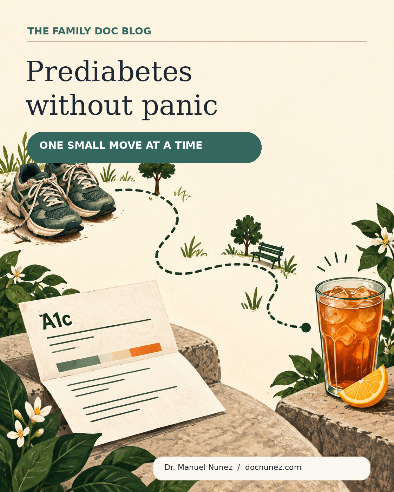

The cough that won't quit
A cough that hangs around after a cold deserves a plan. When to call, and what to bring.
Not a wall of posts — just the most useful pieces organized so people can find a next step quickly.
Metabolic health, stomach pain, blood pressure, delayed care, self-care, immunizations, and grounded quick tips.

A cough that hangs around after a cold deserves a plan. When to call, and what to bring.

A BMI of 31, a new diagnosis of obesity, and a real plan: what intensive lifestyle care means, when it fits, and who can help.

An unexpected A1c result is a reason to make a plan, not a reason to panic.
Practical precision-health strategies for West Valley professionals handling long hours, high cognitive load, and shift work.
A practical guide for patients with multiple chronic conditions — how to manage symptoms at home, when to call your Prosano care team, and when the ER is the right call.
A family physician's guide to keeping kids and parents safe during Phoenix summer heat — recognize heat exhaustion, prevent dehydration, and know when to go to the ER.
Six evidence-backed, no-cost habits that work with your body's natural GLP-1, PYY, and CCK satiety signals — water before meals, protein breakfast, avoiding extreme hunger, strategic preloading, shopping fed, and slow eating.
A modern guide to GLP-1 medicines, diabetes technology, prior authorization, and the basics that still matter.
Common causes, home care, red flags, and when abdominal pain should be checked urgently.
Why blood pressure matters even when you feel fine, and how to make home monitoring useful.
What waiting costs and when to act sooner.
Small, realistic habits that fit real life and help people sustain the load.
A short note that keeps the useful part and drops the hype.
A plain-language guide to vaccines, protection, and community responsibility.
When virtual care works, when in-person care is safer, and how to prepare for a better visit.
A grounded look at data gaps, mobile health, and local adaptation.
New telehealth access, workforce expansion, and state-level reforms — a practical breakdown for patients.
Telehealth is here to stay. A family physician explains what the policy changes mean for patients and how virtual care is becoming a permanent part of primary care.